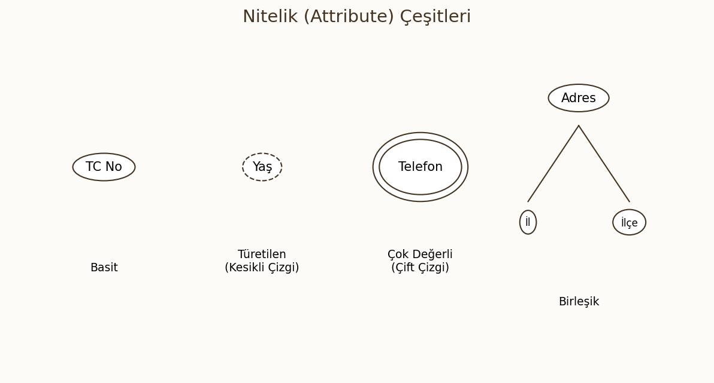
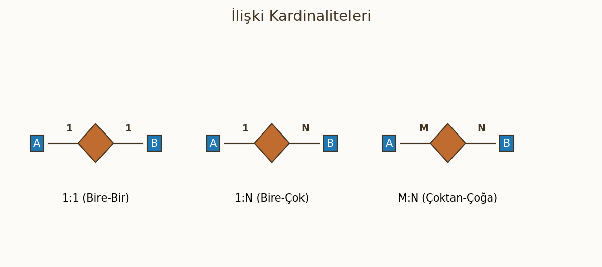
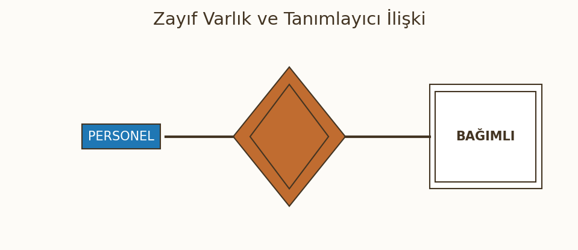

Varlık-İlişki (E-R) Modeli ve Veritabanı Tasarımı
Bu bölüm; veritabanı tasarım sürecinin en kritik aşaması olan kavramsal tasarımı ve Varlık-İlişki (Entity-Relationship) modelini kapsamaktadır. Gerçek dünya senaryolarının varlıklar, nitelikler ve ilişkiler kullanılarak nasıl modelleneceği, anahtar kısıtlamaları ve diyagram çizim kuralları detaylandırılmıştır.
1. Veri Tabanı Tasarım Aşamaları
Veri tabanı tasarımı, gereksinimlerin analizinden fiziksel depolamaya kadar uzanan sistematik bir süreçtir. Bu aşamaların her biri bir sonraki aşama için girdi sağlar.
Requirements (Gereksinim Analizi)
Tasarım sürecinin ilk ve en kritik aşamasıdır. Kullanıcıların ve uygulamanın hangi verileri saklayacağı, hangi işlemleri yapacağı ve hangi kısıtlamalara uyulacağı detaylıca belirlenir. Çıktısı, detaylı bir gereksinim analizi dokümanıdır.
Conceptual Design (Kavramsal Tasarım - ER Model)
Bu aşamada, toplanan gereksinimler seçilen bir kavramsal veri modeline dönüştürülür. Varlık-İlişki (E-R) Modeli bu aşamanın baskın aracıdır.
- Amaç: Verinin fiziksel detaylarından bağımsız, kolay anlaşılır ve eksiksiz bir model oluşturmaktır.
- Çıktı: Kavramsal Şema (ER Diyagramı).
Logical Design (Mantıksal Tasarım - Tablolar)
Kavramsal şemanın (ER Diyagramı) seçilen VTYS'nin veri modeline (çoğunlukla İlişkisel Model) dönüştürüldüğü aşamadır.
- Varlıklar tablolara, öznitelikler sütunlara, ilişkiler ise Foreign Key'lere dönüştürülür.
- Normalizasyon bu aşamada gerçekleştirilir.
Physical Design (Fiziksel Tasarım - İndeksler)
Mantıksal şemanın, belirli bir VTYS (Oracle, PostgreSQL) üzerinde verimli çalışacak şekilde fiziksel olarak optimize edildiği son aşamadır.
- Depolama yapıları, dosya organizasyonları ve indeksleme stratejileri belirlenir.
2. Varlık-İlişki (E-R) Modeli Temelleri
E-R Modeli, gerçek dünyadaki varlıkları ve aralarındaki ilişkileri betimlemek için tasarlanmış yüksek seviyeli, kavramsal bir veri modelidir.
Varlıklar, Nitelikler, İlişkiler (Genel Tanım)
- Varlıklar (Entities): Gerçek dünyadaki nesnelerdir.
- Nitelikler (Attributes): Varlıkları tanımlayan özelliklerdir.
- İlişkiler (Relationships): Varlıklar arasındaki bağlantılardır.
3. Varlık Kavramları
Varlık (Entity) - Soyut ve Somut örneklerle
Varlık, çevreden ayırt edilebilen, kendi başına var olan bir nesnedir.
- Somut Varlık: Fiziksel varlığı olan nesneler (Örn:
Personel,Araba,Bina). - Soyut Varlık: Kavramsal varlığı olan nesneler (Örn:
Pozisyon,Proje,Ders).
Varlık Kümesi (Entity Set)
Aynı türdeki varlıkların topluluğudur (Örn: Bir şirketteki tüm personel kayıtları Personel varlık kümesini oluşturur). Veritabanındaki bir tabloya karşılık gelir.
4. Nitelik (Attribute) ve Çeşitleri
Nitelikler, bir varlığın özelliklerini tanımlayan yapı taşlarıdır.

Basit/Çekirdek Nitelik (Simple)
Tek bir atomik değere sahip olan, daha fazla bölünemeyen niteliktir (Örn: Yaş, TC Kimlik No).
Birleşik Nitelik (Composite - Örn: Adres)
Daha küçük, anlamlı alt bileşenlere ayrılabilen niteliktir.
- Örn:
Adresniteliği;Sokak,Cadde,Şehir,PostaKodugibi alt niteliklerden oluşur.
Türetilen Nitelik (Derived - Örn: Doğum tarihinden Yaş hesaplama)
Değeri, veritabanında saklanan diğer niteliklerden veya verilerden hesaplanabilen niteliktir. Türetilmiş niteliğin kendisi depolanmaz, çalışma zamanında hesaplanır.
- Örn: Yaş =$ \text{Bugünün Tarihi} - \text{Doğum Tarihi}$.
- Türetilen nitelikler E-R diyagramında kesikli çizgi ile gösterilir.
Çok Değerli Nitelikler (Multivalued - Örn: Telefon, Hobiler)
Bir varlığın aynı öznitelik için birden fazla değere sahip olabildiği niteliktir.
- Örn: Bir personelin birden fazla
Telefon NumarasıveyaHobisi olabilir. - İlişkisel modelde bu durum genellikle ayrı bir tabloya taşınarak çözülür.
Etki Alanı (Domain)
Bir niteliğin alabileceği tüm olası yasal değerler kümesidir (Örn: Yaş niteliği için etki alanı $\text{Tam Sayılar}, [0, 150]$ olabilir). Veri bütünlüğü için kritiktir.
5. İlişki (Relation) Kavramları
İlişki Kümesi (Relation Set)
Aynı türdeki ilişkilerin tümüdür (Örn: Bütün öğrencilerin derslere kayıt olduğu eylemlerin topluluğu). İlişkisel modelde bu da bir tabloya karşılık gelir.
Rol ve Rollerin Önemi (Recursive ilişkilerde rol isimleri)
İlişkideki her varlığın oynadığı fonksiyondur. Özellikle bir varlık kümesinin kendiyle ilişki kurduğu Recursive İlişkilerde (Örn: Personel, başka bir Personel'i yönetir) rol isimleri ayrımı yapmak için hayati önem taşır.
- Örn:
YönetimilişkisindePersoneliki rol oynar:YöneticiveÇalışan.
6. İlişki Türleri (Cardinality Ratios)
İki varlık kümesi arasındaki bir ilişkiye kaç varlığın katılabileceğini belirler.

Birden-bire (1:1)
Bir varlık kümesindeki her varlık, diğer varlık kümesindeki en fazla bir varlıkla ilişkilidir.
- Örn: Bir
PersonelbirPark Yerine atanmıştır ve birPark YeribirPersonele aittir.
Birden-çoğa (1:N)
Bir varlık kümesindeki (A) bir varlık, diğer varlık kümesindeki (B) birden fazla varlıkla ilişkilidirken, B'deki her varlık A'dan en fazla bir varlıkla ilişkilidir.
- Örn: Bir
BölümbirçokPersoneli yönetir, ancak herPersonelbirBölümtarafından yönetilir.
Çoktan-bire (N:1)
Birden çoğa ilişkisinin tersidir. N tarafındaki birçok varlık, 1 tarafındaki tek bir varlıkla ilişkilidir.
Çoktan-çoğa (M:N)
Bir varlık kümesindeki (A) bir varlık, diğer kümedeki (B) birden fazla varlıkla ilişkilidir. Aynı zamanda B'deki bir varlık da A'dan birden fazla varlıkla ilişkilidir.
- Örn: Bir
Öğrencibirden fazlaDerse kayıt olur ve birDerse birden fazlaÖğrencikayıt olur.
İlişki Türünün Kalıcılığı ve Değişimi
Sınav Bilgisi
İlişki türü, tasarlanan mini dünyanın kurallarına göre belirlenir. Örneğin, bir Bölümün sadece Tek Bir Başkanı varsa (1:1), bu bir kısıtlamadır ve bu kısıtlama zamanla değişebilir (yönetmelik değişirse 1:N olabilir). VTYS, bu kısıtlamaları korumakla yükümlüdür.
7. İlişki Derecesi (Degree of Relationship)
İlişki derecesi, bir ilişki kümesine katılan varlık kümesi sayısını ifade eder.
Birli (Unary / Recursive) Derece İlişkiler (Örn: Personel - Yönetici)
İlişkiye sadece tek bir varlık kümesi katılır. Varlık kümesinin kendiyle olan ilişkisidir (Örn: Personel varlık kümesindeki bir personelin, yine aynı kümedeki başka bir personeli Yönetmesi). Rol isimleri, ayrım için hayati önem taşır.
İkili (Binary) Derece İlişkiler
En yaygın ilişki türüdür. İlişkiye iki varlık kümesi katılır (Örn: Öğrenci ve Ders arasındaki Kayıt ilişkisi).
Üçlü (Ternary) Derece İlişkiler (Örn: Tedarikçi-Parça-Proje)
İlişkiye üç varlık kümesi katılır. Genellikle iki ikili ilişki yerine tek bir üçlü ilişki kullanılıp kullanılamayacağı dikkatle değerlendirilmelidir.
- Örn: Bir
Tedarikçi, belirli birProjeiçin belirli birParçayı tedarik eder. Bu ilişki(Tedarikçi, Parça, Proje)üçlüsüne bağlıdır.
8. Varolma Bağımlılığı (Existence Dependency)
Varolma bağımlılığı, bir varlık kümesindeki varlığın var olabilmesi için başka bir varlık kümesindeki varlığın zorunlu olarak var olmasını ifade eder.
Baskın (Dominant) Varlık
Başka bir varlığın varlığını sağlayan veya zorunlu kılan varlıktır.
Bağımlı (Subordinate) Varlık
Var olabilmesi için baskın bir varlığın varlığına mutlaka ihtiyaç duyan varlıktır.
- Örn: Güçlü varlık kümesi baskın, zayıf varlık kümesi bağımlıdır.
9. Anahtarlar (Keys) - KRİTİK KONU
Anahtarlar, bir varlık kümesindeki veya ilişkideki her bir kaydı (tuple) benzersiz şekilde tanımlayan bir veya birden fazla öznitelik kümesidir.
Süper Anahtar (Super Key)
Bir varlık kümesindeki her kaydı benzersiz şekilde tanımlayabilen özniteliklerin herhangi bir kümesidir. Süper anahtar, gereksiz öznitelikleri içerebilir.
- Örn:
Personel(TCKimlikNo, Ad, Soyad, Email). Süper anahtarlar: ${TCKimlikNo}$, ${TCKimlikNo, Ad}$, ${Email}$.
Aday Anahtar (Candidate Key)
Süper anahtar olup, minimumluk (minimality) şartını sağlayan öznitelik kümesidir. Yani, bu kümeden herhangi bir öznitelik çıkarılırsa, artık kaydı benzersiz tanımlayamaz.
- Örn: ${TCKimlikNo}$, ${Email}$ (Benzersiz ise). ${ Ad}$ aday anahtar değildir, çünkü
Adçıkarılabilir.
Birincil Anahtar (Primary Key) - Kuralları (Unique + Not Null)
VTYS tasarımcısı tarafından aday anahtarlar arasından seçilen, varlık kümesini benzersiz tanımlamak için kullanılan anahtardır.
- Kural 1 (Unique): Değeri kümedeki her kayıt için benzersiz olmalıdır.
- Kural 2 (Not Null / Entity Integrity): Hiçbir özniteliği boş (NULL) değer alamaz.
Birleşik Anahtar (Composite Key)
Birden fazla özniteliğin birleşimiyle oluşan anahtardır.
- Örn: Bir
Kayıttablosu için Primary Key: ${OgrenciNo, KursKodu}$.
Yabancı/Dış Anahtar (Foreign Key)
Bir tablodaki kaydın, başka bir tablonun birincil anahtarını referans göstermesini sağlayan öznitelik (veya öznitelik kümesi) setidir. İlişkisel bütünlüğü (Referential Integrity) sağlar.
Sınav Bilgisi: İlişkisel Bütünlük Kısıtı
Bir tablonun Yabancı Anahtarı ($FK$), ya referans gösterdiği tablodaki bir Birincil Anahtar ($PK$) değerini içermeli ya da NULL (Boş) olmalıdır. (Zayıf varlıklar hariç.)
10. Güçlü ve Zayıf Varlık Kümeleri

Güçlü Varlık Kümesi (Kendi anahtarı olan)
Kendi Birincil Anahtarını (Primary Key) benzersiz bir şekilde tanımlayabilen varlık kümesidir. Varlığı, başka bir varlığa bağımlı değildir. E-R diyagramında tek dikdörtgenle gösterilir.
Zayıf Varlık Kümesi (Weak Entity - Kendi anahtarı olmayan)
Kendi başına birincil anahtar oluşturamayan, varlığı için başka bir güçlü varlığa bağımlı olan varlık kümesidir.
- Örn: Bir
ÇalışanınBağımlıları(eşi, çocukları).Bağımlının varlığı, ait olduğuÇalışanın varlığına bağlıdır. - Zayıf varlıklar E-R diyagramında çift dikdörtgenle gösterilir.
Zayıf Varlığı Güçlendirmek (Identifying Relationship)
Zayıf varlığın güçlü varlığa olan ilişkisine Tanımlayıcı İlişki (Identifying Relationship) denir.
- Zayıf varlığın anahtarı (Kısmi Anahtar - Partial Key), güçlü varlığın anahtarıyla birleşerek nihai Primary Key'i oluşturur.
- Kısmi anahtar, kesikli çizgi ile altı çizili özniteliktir.
11. E-R Modelleme Örnekleri (Senaryolar)
Öğrenci Notu: Tasarım İpuçları
İlişkisel modellemeye geçiş yapmadan önce, ER diyagramının kardinalite oranlarını ve anahtarlarını doğru belirlemek, sonraki normalizasyon adımlarını kolaylaştırır.
Banka Hesabı Örneği (Müşteri-Hesap İlişkisi)
- Varlıklar:
Müşteri(Güçlü, PK: MüşteriNo),Hesap(Güçlü, PK: HesapNo). - İlişki:
HesapSahibi Olma(1:N, Müşteri:Hesap).
Bölüm-Ders İlişkisi ve Dönem Varlığı
- Varlıklar:
Bölüm,Ders. - İlişki:
Açar(1:N, Bölüm:Ders). - Ek Karmaşıklık:
Dersin hangiDönemde açıldığı. Bu durumdaDönembir varlık olarak eklenip(Ders, Dönem)arasında ilişki kurulabilir.
Şirket Veritabanı Örneği (Çalışan, Departman, Proje ilişkileri)
- Varlıklar:
Çalışan,Departman,Proje. - İlişkiler:
Yönetim(1:1, Departman:Çalışan).Çalışma(M:N, Çalışan:Proje). M:N ilişkisineSaat(Hours) gibi bir öznitelik eklenirse, bu ilişki daha sonra ayrı bir tabloya dönüştürülür.